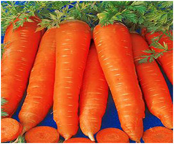

|
Lemon to eliminate obesity
Expansion of medical scientists and food plants in male characteristics and benefits of lemon...More |
|
|
Green coffee help to lose weight |
|
|
The best way to lose weight |
|
|
Watermelon and lose Weight
Watermelon is not just a delicious fruit, but
also the best food for weight reduction, especially in summer
,Watermelon
contains fewer
calories...More
|
|
|
Kiwi fruit
Kiwi fruit is very rich in vitamin C ,so this
fruit contains a high percentage of it ranging from 200 to
300 mg per one hundred grams...More
|
|
|
Green apple juice
Green apple juice works to accelerate the burning
of fat in Body, where it
speeds of metabolism, it activates the work of the liver
...More
|
|
|
Nutritional Facts about bananas Many people avoid eating bananas, and think they are fattening, but they are a great source of 3 sugars that occur naturally ...More |
|
|  |
Carrots |
 |
Beans
It is superstar foods because of its high
nutritional value are rich in protein and fiber and poor in fat,
so is a healthy alternative to meat...More
|
|
Popcorn Popcorn is a healthy snack and it has high nutritional value ...More |
|
 |
Red tea • Drinking red tea regulates the process of digestion. •Helps the body to sweat and reduce the proportion of salt in the body for protection from pressure...More |
|
Sugars |
|
|
Watercress juice
Watercress juice purifies the blood and prevents
hair loss and helps digestion and increased secretion of bile from
the liver
...More
|
|
|
|
Cloves
Clove is an aromatic plant. This plant is one of
the
beautiful plants that
are grown in gardens because it has beautiful flower...More
|
| To Watch Video |
How
To Develop Healthy Eating Habits healthy food for children Easy Ways To Eat Healthy |